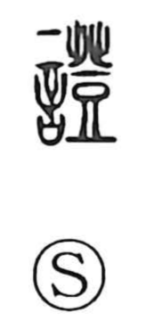

証

Uncategorized
Kun: akashi, shirushi | On: sho
proof ・ evidence ・ to prove ・ sign
Explanation
Originally written as 證, this is a phono-semantic character: the speech element 言 signals the realm of words, while 登 serves as the phonetic, a value shared with graphs such as 澄. In earlier usage, 澄 could substitute for 徴, meaning a sign or token of proof, and the Shuowen glosses 證 as “words that have evidence.” From this basis the character expresses words that furnish proof—evidence, a sign—and by extension the act of proving. In modern Japanese, 証 is the general-use form.